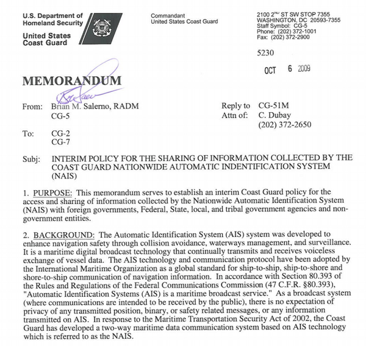

04.30.2013 12:37
Ship security NOT compromised
Update 3 hours later: I
impressed by the interaction around these articles that have
happened. Sean has been too kind in mentioning some of the material
I pointed him to in the article. Rapid 7 folks have been working to
clarify what they meant by their writing.
Thanks to Brendan Kenny, I just saw this: Sean Gallagher at ars technica wrote Good Morning, Captain: open IP ports let anyone track ships on Internet In 12hrs, researchers log more than 2GB of data on ships due to Automatic ID Systems.
This article is so totally wrong with it's conclusions. The issues are open ports that could possibly be DOS'ed (denial of serviced) or exploited/pwned. AIS is a broadcast technology meant for public consumption.
Note: emphasis added.
According to a USCG Rear Admiral Brian Salerno in official documentation from back in 2009, which I received directly from the USCG:
Rapid 7's analysis gets closer to the mark with this:
Where Rapid 7 missed:
How does making available data that can be had by anyone a risk to the ships? Fiddling with data and if any of these sites are transceivers would put ships and other things at risk, but not data availability when it is already available.
See also: AIS Security and Integrity post by me back in Nov 2012 for more concepts.
Update 2013-May-04: Related links... Geo Garage on 2013-May-01: Loose blips sink ships: leaky communications threaten marine vessels. My response is "ARG!". The article at TechNewsDaily is frustrating. This stuff is supposted to be decodable and usable by the public:
I am entertained by his pointer back to his post from May 2005:
Google can track ships at sea ; detailed maps planned of sea bottom
If you want some fun, check out 23 minutes into this video by MTJ and then watch our upcoming Google I/O talk where we will explain how you can track ships (or build all sorts of other tools on Google cloud infrastructure)...
Thanks to Brendan Kenny, I just saw this: Sean Gallagher at ars technica wrote Good Morning, Captain: open IP ports let anyone track ships on Internet In 12hrs, researchers log more than 2GB of data on ships due to Automatic ID Systems.
This article is so totally wrong with it's conclusions. The issues are open ports that could possibly be DOS'ed (denial of serviced) or exploited/pwned. AIS is a broadcast technology meant for public consumption.
Note: emphasis added.
For many of the ships, the vessel's name was included in the broadcast data pulled from the receivers. For others, the identification numbers broadcast by their beacons are easily found on the Internet. By sifting through the data, the researchers were able to plot the location of individual ships. "Considering that a lot of military, law enforcement, cargoes, and passenger ships do broadcast their positions, we feel that this is a security risk," Guarnieri wrote.Guarnieri needs to do a little more research before making statements like this. Even if you plugged all these holes, AIS ship tracking data is considered open data and would still be generally available through many sources for prices ranging from free to expensive. Military vessels that are transmitting in the clear either intend to let people know or are to dumb to make sure they are either in listen only mode or turn on blue force encryption (that that still allows direction finding of them).
According to a USCG Rear Admiral Brian Salerno in official documentation from back in 2009, which I received directly from the USCG:
As a broadcast system (where communications are intended to be received by the public), there is no expectation of privacy of any transmitted position, binary, or safety related messages, or any information transmitted on AIS."

Rapid 7's analysis gets closer to the mark with this:
A quick fingerprint shows that many of the systems identified have open telnet shells, web interfaces, and VNC servers, and many of these are connected to old and vulnerable versions of Windows.Being pwned is generally bad, but if people are relying on this data, then doing a DOS or injecting / removing data could do unpleasant things that range from implying false cargo movements that might impact prices to adding confusion to situation awareness increasing the chances of accidents or drawing attention from bad behavior.
Where Rapid 7 missed:
We agree that the availability of global AIS data in such an unsecured manner is a potential danger, both for the safety of the vessels being tracked.
How does making available data that can be had by anyone a risk to the ships? Fiddling with data and if any of these sites are transceivers would put ships and other things at risk, but not data availability when it is already available.
See also: AIS Security and Integrity post by me back in Nov 2012 for more concepts.
Update 2013-May-04: Related links... Geo Garage on 2013-May-01: Loose blips sink ships: leaky communications threaten marine vessels. My response is "ARG!". The article at TechNewsDaily is frustrating. This stuff is supposted to be decodable and usable by the public:
To suggest that most seafaring ships âÄî including tankers, fishing boats and military vessels âÄî could be hacked would be an insult to industrious hackers everywhere. Instead, reading a ship's private or sensitive communications requires no hacking knowledge whatsoever. The amount of publicly broadcast, potentially sensitive material on the ocean is staggering.Yes, I realize that it doesn't say that this is bad or anything new, but it tries to lead the reader in that direction. Geogarage at least links to more opinions on both sides of the argument.
I am entertained by his pointer back to his post from May 2005:
Google can track ships at sea ; detailed maps planned of sea bottom
If you want some fun, check out 23 minutes into this video by MTJ and then watch our upcoming Google I/O talk where we will explain how you can track ships (or build all sorts of other tools on Google cloud infrastructure)...
04.14.2013 20:12
oauth2
Some parts of oauth 2.0 have just
worked for me. However, there are parts that I just don't seem to
get. Eventually, we'll be sharing a whole sets of tools working
together with oauth2 being the authentication glue for the whole
thing. But right now, I've just watched this:
and just got these two bootks: Getting Started with OAuth 2.0 and OAuth 2.0: The Definitive Guide; Practical Information for Building Clients and Servers
Can't wait to have this all figured out.
and just got these two bootks: Getting Started with OAuth 2.0 and OAuth 2.0: The Definitive Guide; Practical Information for Building Clients and Servers
Can't wait to have this all figured out.
04.06.2013 12:15
TrailScribe
Check out this video of Trey
describing TrailScribe. Trey does an awesome job of describing the
idea and I really like the illustrations!
This sounds pretty much exactly what I was trying to advocate for during 1993-96 when I was doing more field work on land. I would add a couple features to Trey's design. First would be a VHF or UHF data link with repeater to pass around the team members' positions, sample report positions and maybe any text they entered. If you initially drop a repeater or two (maybe with a basic weather station and GPS base station) on high points in the field area, then the team could have pretty good sharing during the day. Even areas that do have cell coverage usually totally loose it in areas. Second would be to use Glass or something like it to allow the science team to snag images easier. It might also take low res context picture every few minutes (would be good to let people know when that image was going to be taken for privacy). You'd still want a camera with a macro feature for a lot of photos. Finally, it would be great to have speech-to-text to give a first past of transcribing audio notes. Science vocabulary is notoriously difficult, but rough starting text would be awesome.
I spent a lot of time thinking about this while mapping the Southern Snake Range. During they day, we were in 2 person teams mapping the structure (unit boundaries, strike and dips, etc). We often had evening discussions about what we were seeing between groups as we were transfering our field notes from our field map to the group map at camp.
This sounds pretty much exactly what I was trying to advocate for during 1993-96 when I was doing more field work on land. I would add a couple features to Trey's design. First would be a VHF or UHF data link with repeater to pass around the team members' positions, sample report positions and maybe any text they entered. If you initially drop a repeater or two (maybe with a basic weather station and GPS base station) on high points in the field area, then the team could have pretty good sharing during the day. Even areas that do have cell coverage usually totally loose it in areas. Second would be to use Glass or something like it to allow the science team to snag images easier. It might also take low res context picture every few minutes (would be good to let people know when that image was going to be taken for privacy). You'd still want a camera with a macro feature for a lot of photos. Finally, it would be great to have speech-to-text to give a first past of transcribing audio notes. Science vocabulary is notoriously difficult, but rough starting text would be awesome.
I spent a lot of time thinking about this while mapping the Southern Snake Range. During they day, we were in 2 person teams mapping the structure (unit boundaries, strike and dips, etc). We often had evening discussions about what we were seeing between groups as we were transfering our field notes from our field map to the group map at camp.